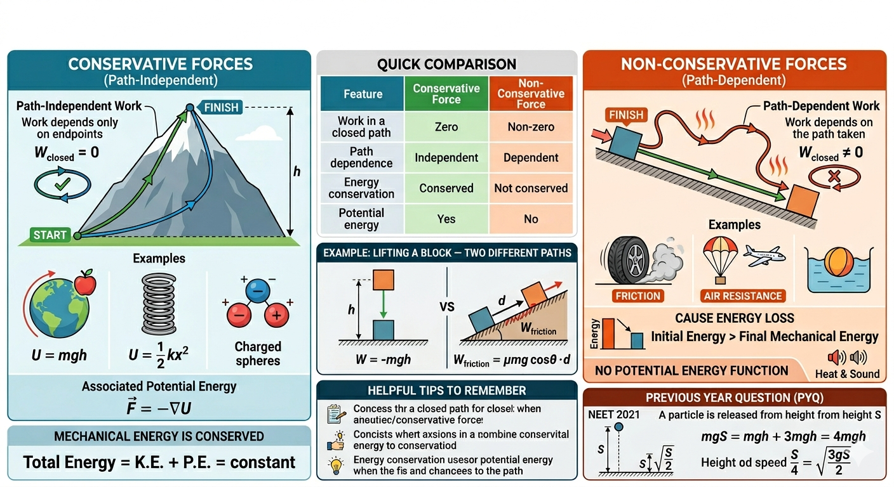

Conservative and Non-Conservative Forces

Image generated by Google AI
In mechanics, forces can be broadly divided into two main types: conservative and non-conservative forces. Recognizing which type of force is acting helps us understand how energy behaves in a system, whether it stays within the system or gets transformed into other forms like heat or sound.
But let us slow down for a second and really picture what is happening. Imagine you are moving an object, maybe lifting a book, sliding a box, or stretching a spring. As you do this, you are constantly transferring energy. The big question physics asks is: where does that energy go? Does it remain neatly stored and recoverable, like money in a bank? Or does some of it “leak away” into the surroundings, becoming disorganized energy like heat?
This simple question is what leads us into the beautiful distinction between conservative and non-conservative forces, a distinction that quietly governs everything from planetary motion to why your hands feel warm after rubbing them together.
Conservative Forces
A conservative force is one where the work done in moving an object between two points does not depend on the path taken. It only depends on where you start and where you finish.
Think of it like hiking up a hill. Whether you take a steep shortcut or a long winding path, the change in height is the same, and so is the work done against gravity. The universe, in this case, does not care about your journey, only your starting and ending points.
At a deeper level, this path-independence happens because conservative forces are associated with a well-defined energy landscape. Every point in space has a specific potential energy value, and the force simply “guides” objects along gradients of this energy.
- Work Around a Loop:
\[ W_{\text{closed}} = 0 \]
If you start somewhere, wander around, and come back to the same point, the total work done by a conservative force is zero. Why? Because the initial and final energies are identical, nothing has changed overall.
- Examples of Conservative Forces:
- Gravity
- Electrostatic force
- Ideal spring (elastic force)
These forces all share a key feature: they store energy in a recoverable form. Stretch a spring, it stores energy. Lift an object, it stores energy. Bring charges closer, it stores energy.
- Associated with Potential Energy:
\[ \vec{F} = -\nabla U \]
This equation is incredibly powerful. It tells us that force always acts in the direction where potential energy decreases most rapidly. Nature “prefers” lower energy states.
For gravity near Earth's surface: \[ U = mgh \]
Here, height directly translates to stored energy. The higher you go, the more energy you store, ready to be converted into motion.
For a spring: \[ U = \frac{1}{2} k x^2 \]
This quadratic dependence explains why stretching a spring further becomes harder, it stores energy more rapidly as displacement increases.
- Mechanical Energy is Conserved:
\[ \text{Total Energy} = \text{K.E.} + \text{P.E.} = \text{constant} \]
This is where the magic happens. Energy keeps transforming, from potential to kinetic and back, but the total remains unchanged. A falling object speeds up because its potential energy is being converted into kinetic energy.
At a deeper level, this conservation arises from the symmetry of nature, specifically, the fact that the laws of physics don’t change with time. This idea is formalized in advanced physics through Noether’s theorem.
Non-Conservative Forces
Non-conservative forces are different. The work they do depends on the path taken, and they often convert mechanical energy into other forms like heat or sound.
Now imagine dragging a box across the floor. The longer the path, the more effort you feel. That “extra effort” isn’t stored anywhere useful, it’s dissipated, mostly as microscopic vibrations of atoms, which we perceive as heat.
This is the hallmark of non-conservative forces: they involve complex interactions at the microscopic level, where organized motion (mechanical energy) gets scrambled into random motion (thermal energy).
- Path-Dependent Work:
\[ W_{\text{closed}} \neq 0 \]
If you move an object in a loop under friction, you will end up losing energy every time. The system does not “reset” itself, energy has been irreversibly transferred to the surroundings.
- Examples of Non-Conservative Forces:
- Friction
- Air resistance (drag)
- Viscous forces (like in liquids)
- Tension in non-ideal ropes or strings
Air resistance, for example, depends on speed and often increases dramatically at high velocities. This is why fast-moving objects heat up.
- They Cause Energy Loss:
\[ \text{Initial Mechanical Energy} > \text{Final Mechanical Energy} \]
But remember, energy isn’t truly “lost.” It’s just transformed into less useful forms. This aligns with the broader law of energy conservation, which still holds universally.
- No Potential Energy Function:
Non-conservative forces cannot be described using potential energy equations.
This is because their effects depend on history (the path taken), not just position. There is no single “energy value” you can assign to a point in space.
Quick Comparison
| Feature | Conservative Force | Non-Conservative Force |
|---|---|---|
| Work in a closed path | Zero | Non-zero |
| Path dependence | Independent of path | Dependent on path |
| Energy conservation | Mechanical energy conserved | Mechanical energy not conserved |
| Associated potential energy | Yes | No |
| Examples | Gravity, Spring force, Electrostatic force | Friction, Air resistance, Viscous drag |
If you pause and reflect, this table is really telling a story about reversibility. Conservative processes are reversible, you can “get your energy back.” Non-conservative processes are irreversible, once energy spreads out (like heat), it’s practically impossible to fully recover it.
Example: Lifting a Block — Two Different Paths
Q: Suppose you are lifting a block up by \( 5\,\text{m} \) vertically, or pushing it up a ramp to the same height. Which forces care about the path taken?
Answer: Gravity doesn’t, it’s conservative and only depends on height. But friction, which acts along the ramp, definitely depends on the path and adds extra energy loss.
Let us visualize this carefully. When you lift the block straight up, you are working directly against gravity. But on a ramp, even though the vertical height is the same, the distance traveled is longer. That extra distance is exactly where friction “acts” and drains energy.
Work done by gravity: \[ W = -mgh \quad \text{(same for both paths)} \]
This negative sign tells us something subtle: gravity is doing work against your lifting motion.
Work done by friction (on ramp): \[ W_{\text{friction}} = \mu mg \cos\theta \cdot \text{distance along ramp} \]
Notice how distance appears explicitly here, that is the signature of path dependence.
Key Takeaway: Gravity is conservative, it’s path-independent. Friction is non-conservative, it depends on the path and causes energy loss.
So even though both paths get you to the same height, the ramp requires more total energy input because of frictional losses.
Helpful Tips to Remember
- If you can define potential energy for a force, it’s conservative.
- Friction always leads to mechanical energy loss, it’s always non-conservative.
- Use energy conservation methods for gravity and springs.
- If mechanical energy decreases in a system, a non-conservative force is likely acting.
A deeper tip: whenever you are solving problems, ask yourself—“Can I trust energy conservation here?” If yes, your problem often becomes dramatically simpler.
Previous Year Questions (PYQs)
Q2. A particle is released from height \( S \) from the surface of the Earth. At a certain height, its kinetic energy is three times its potential energy. The height from the surface and the speed at that instant are respectively:
- \( \frac{S}{4}, \sqrt{\frac{3gS}{2}} \)
- \( \frac{S}{4}, \frac{3gS}{2} \)
- \( \frac{S}{4}, \frac{\sqrt{3gS}}{2} \)
- \( \frac{S}{2}, \frac{\sqrt{3gS}}{2} \)
NEET 2021
Solution:
Given initial height = \( S \). At height \( h \), kinetic energy \( K = 3U \). Using conservation of mechanical energy:
Since only gravity is acting (a conservative force), we can safely apply energy conservation without worrying about losses.
\[ mgS = mg h + \frac{1}{2} m v^2 \]
Given \( K = 3U \), we have:
\[ \frac{1}{2} m v^2 = 3 m g h \implies v^2 = 6 g h \]
This relation is powerful, it directly connects speed with position.
Substitute into energy equation:
\[ mgS = mg h + \frac{1}{2} m (6 g h) = mg h + 3 m g h = 4 m g h \]
Divide both sides by mg:
\[ S = 4h \implies h = \frac{S}{4} \]
Speed at that height:
\[ v = \sqrt{6 g h} = \sqrt{6 g \cdot \frac{S}{4}} = \sqrt{\frac{3 g S}{2}} \]
Answer: \( \boxed{\text{Height} = \frac{S}{4}, \quad \text{Speed} = \sqrt{\frac{3 g S}{2}}} \). Option (a) is correct.
Notice how smoothly the problem unfolds once you recognize that gravity is conservative. That recognition is often the hardest, and most important step.